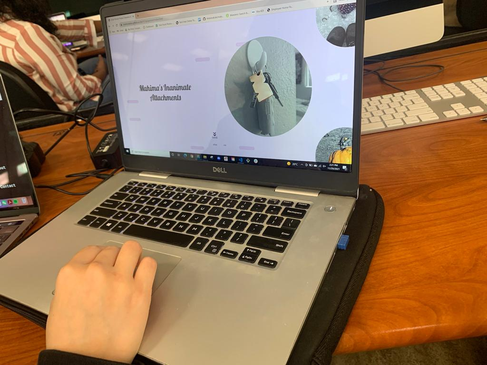

Tasks
- Navigate and familiarize yourself with the page
- Write down one word or a sentence about what you think the page is about
- Find the image with a pine cone and read about it
After testing questions
- Was the scroll animation too distracting?
- Is there anything you do not understand? (this cold be either visually or otherwise)
- What do you suggest could improve the usability of the page
Observations:
User 1
All tasks were accomplised but it took some time for the user to understand that they need to hover over the image to get more information about it.
The user was squinting at the screen so probably improve on font and font arrangement of the text body.
For task 2 user wrote down "soothing"
User one answers and feedback
The user did mention the paragraph could be arranged better. Some of the titles of the images seem a bit misaligned. The user also found a two typos in the body text.
The User also suggested to add dates right under the titles or with the titles to add uniformity and a more cohesive and quick information grasping display. The tester enjoyed the color and a soothing effect to the page. They said that it was almost like soothing music feel but visually.
User 2
Again all tasks were completed except it took longer to find and undertstand the hover effecet to get more information. Everything else went smoothly with the tester.
For task 2 user wrote down "artifacts"
User one answers and feedback
The User also suggested that there be some indication about the hover effect. Maybe just a little bubble that said that you can hover over the image.
Another suggestion was to change teh location of the "scroll" icon to maybe in a circular way becasue the tester thought it would scroll down rather than just in a circle. The suggestion was also to use curcled arrow beside the central displaying image. The tester applauded the tranisitons and animation.
User 3
User 3 did not notice the hover effect altogether so definietly something that needs to be worked on. The tester was able to finish the rest of the tasks.
For task 2 user wrote down "items with interesting memories for Mahima"
User one answers and feedback
the user did mention the paragraph could be arranged better. Some of the titles of the images seem a bit misaligned. The user also found a two typos in the body text.
The User also suggested to add dates right under the titles or with the titles to add uniformity and a more cohesive and quick information grasping display.